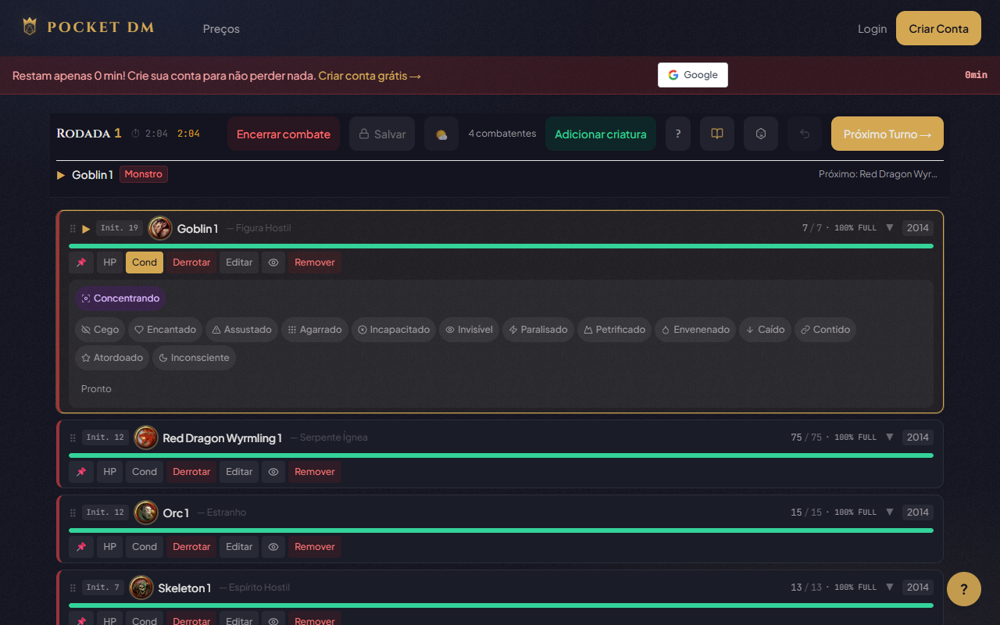

Parece contraintuitivo: como mais informação pode gerar mais imersão? A resposta está na psicologia do jogo.
O efeito da informação visível
Quando o jogador vê que tá com 8 HP e uma condição Poisoned ativa, duas coisas acontecem:
1. Tensão emocional: O número não é abstrato. É visual, é presente, é urgente. O jogador SENTE que tá em perigo. Ele não precisa que o mestre diga "você tá mal". Ele VÊ.
2. Decisão com peso: Recuar ou arriscar? Usar o último slot de cura agora ou guardar? Cada decisão tem gravidade porque o jogador tem contexto.

Condições visíveis: Blinded, Poisoned, Stunned. Jogadores sentem o perigo em tempo real
O mestre como narrador, não calculadora
Quando o sistema cuida dos números, o mestre fica livre pra fazer o que ele faz de melhor: narrar. Em vez de "você toma 14 de dano, fica com... peraí... 23 HP", o mestre diz:
"A garra do dragão rasga sua armadura. Você sente o calor do sangue escorrendo. Sua visão escurece por um segundo. Quando volta, você vê o dragão preparando o próximo ataque."
O jogador olha pro celular. Vê o HP cair de 37 pra 23. Vê a barra ficar amarela. Sente.
Isso é imersão: informação visual e narrativa funcionando juntas.
No Pocket DM
Cada jogador vê no celular: seu HP atual com barra colorida, condições ativas com ícones visuais e a ordem de iniciativa. O mestre controla o que os jogadores veem e pode ocultar HP de monstros ou revelar parcialmente.
O resultado: jogadores engajados, tensão real, e o mestre livre pra narrar sem se preocupar com planilha.